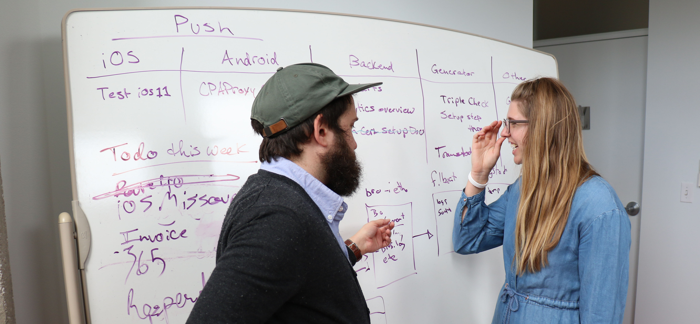

Why use Push?
- Fast setup time
- One week instead of 6+ months
- Constant updates and features improvements
- Much more stable as well as faster than just a web site
- Open Source
- All code is available for you to take, modify and improve
- Push notifications
- Incentivizes users to read your work
- Solicit donations and crowd funding
What can the Push app do?
- View current headlines
- Read most recent stories
- Sorts stories by categories
- Offline caching of stories
- Search through entire CMS history
- Share articles on social media
- Analytic tracking
- Receive push notifications
- Direct user to stories
- Solicit (semi) in-app donations
- Video integration
- Run one-off campaigns
- Supports multiple languages
- Built in proxy features to prevent site blocking (iOS only so far)
Examples
- OCCRP (Organized Crime and Corruption Reporting Project)
- Meydan TV (Azerbaijan)
- Bivol (Bulgaria)
- Rise Moldova (Moldova)
- KRIK (Serbia)
- CINS (Serbia)
- NJ News Commons - Mont Claire State University
- Columbia Missourian
- Many more coming up